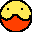

POGames & friends
getting into game engine creation & ai simulation

POGame
the first attempt to make a 2d game engine. good learning experience with cpp & game engines in general. lots of oversights though
(cpp)

POGenetic Algorithm
simulation software to see which variation of genetic algorithm is best for agents solving a maze
(cpp)
POGenetic Algorithm
simulation software to see which variation of genetic algorithm is best for agents solving a maze
(cpp)
back